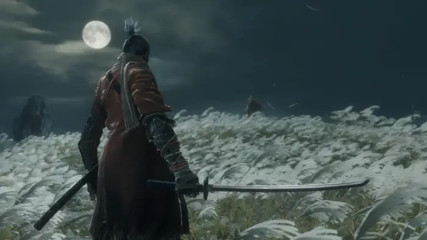

Sekiro: Shadows Die Twice is a 2019 action-adventure game developed by FromSoftware and published by Activision. The game follows a shinobi known as Wolf as he attempts to take revenge on a samurai clan who attacked him and kidnapped his lord.
